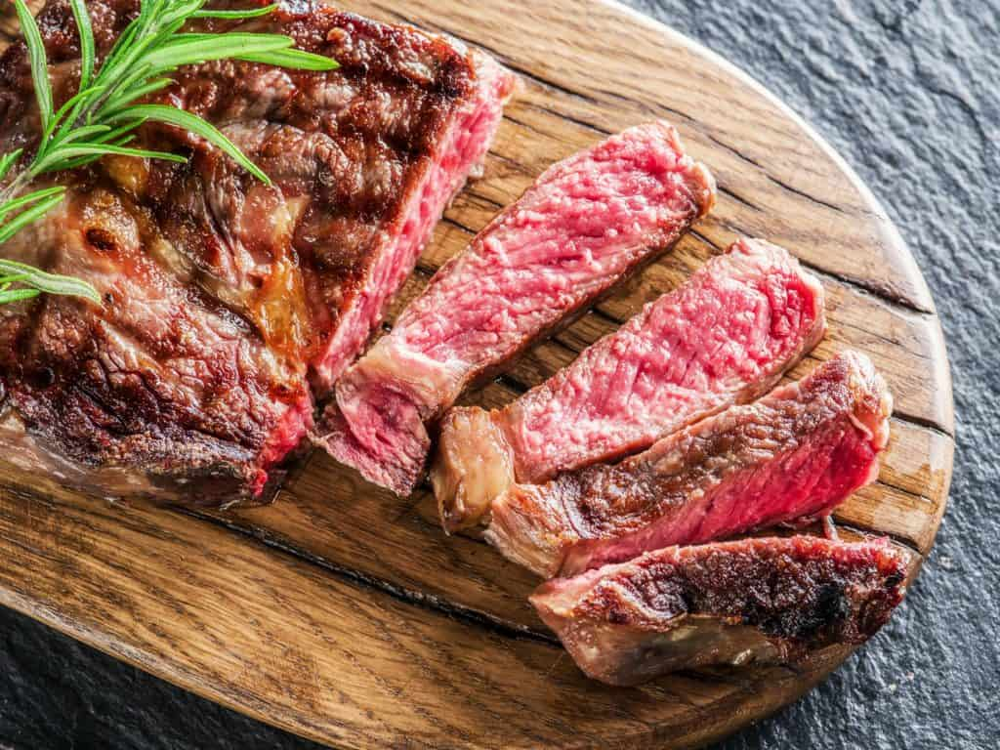

Steak

Juicy and Tender Steak Recipe
A perfectly-seasoned, medium-rare steak is simply a classic. Follow this recipe for the best steak of your life.
Ingredients
- 1/2lb Rib eye steak
- 2x Cloves garlic
- 1 Tbsp olive oil
- Salt/pepper to taste
Steps
- Remove steak from fridge at least 20 mins before cooking
- Season stake with salt and pepper
- Heat oil in a medium frying pan at a high heat until just smoking
- Add steak to pan, placing away from you
- Sear steak on one side for 2 mins, then flip using tongs
- Add garlic to pan, rubbing on steak as it cooks
- Cook steak for 3 more mins or until it reaches medium firmness
- Remove steak from pan and allow to rest for 2-3 mins